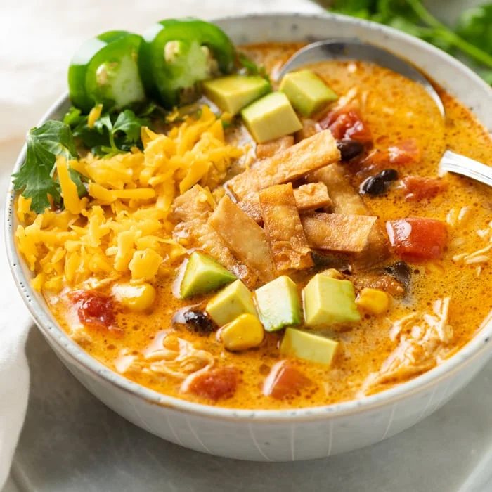

5 Ingredient Chicken Taco Soup

Chicken Taco Soup in a bowl
This is a 5 ingredient recipe for chicken taco soup. Mainly consists of black beans, salsa and chicken.
Ingredients
- 2 cans (15.5 ounce) reduced-sodium black beans, rinsed and drained, divided
- 1 (1 lb.) jar thick and chunky salsa, divided
- 4 cups cooked rotisserie chicken - skinned, boned, and meat shredded
- 1 (32 ounce) container low sodium chicken broth
- 1 (14.4 ounce) bag frozen tri-colored pepper and onion medley
Steps
- Combine 1 can of black beans and ½ jar of salsa in a blender; blend until smooth.
- Combine black bean mixture, remaining can of black beans, remaining salsa. shredded chicken, pepper and onion medley, and chicken broth in a large pot and set over medium-high heat.
- Bring to a soft simmer and cook until warm, about 10 minutes.